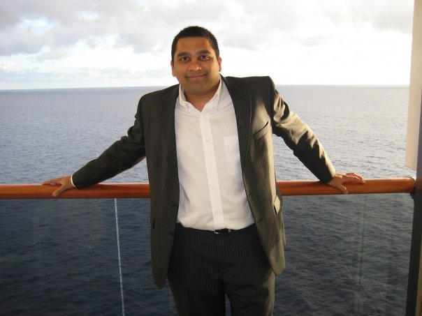

Aadhar studied at the Ernest Mario School of Pharmacy at Rutgers Univeristy, where he proved himself a brilliant pharmacist with a specialty in pharmacology and clincal development. After practiced pharmacy for a very short time, Aadhar joined the Clinical Research and Development organization of Bristol-Myers Squibb, in Princeton, New Jersey. Aadhar managed the development of many different medicines within the early clinical development space, including breakthrough compounds in immuno-oncology such as Ipilimumab and Nivolumab. In a bid to develop a more rounded skill set and to learn the tools and methods of entrepreneurs, Aadhar left Bristol-Myers Squibb and returned to graduate school at the Kellogg School of Management at Northwestern University to puruse an MBA. He is currently pursuing majors in Finance, Marketing and Entrepreneurship and incidentally is enrolled in a coding class where he is currently self-authoring this bio and writing in the third person.